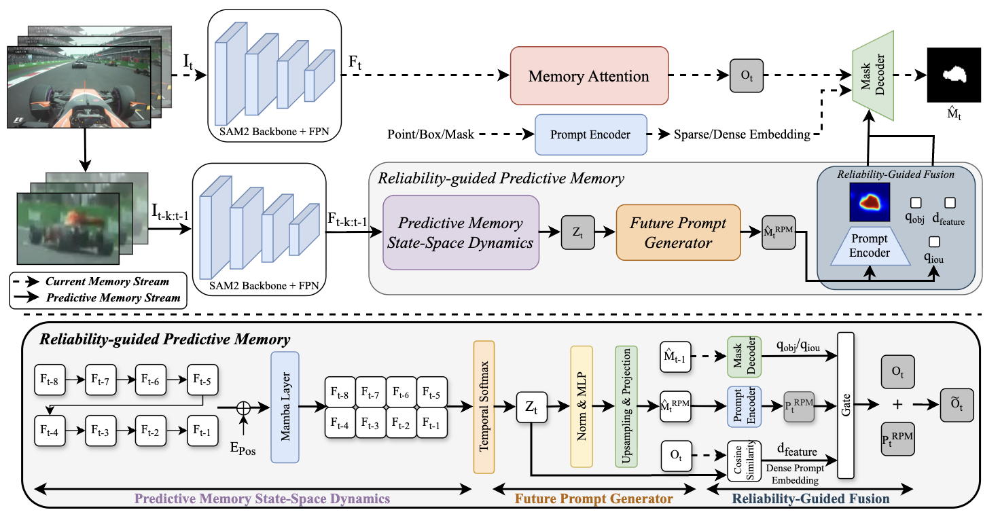

Memory as Dynamics: Learning Reliability-Guided Predictive Models for Online Video Perception
International Conference on Machine Learning (ICML), 2026
Reliability-guided predictive memory selectively uses future cues only when they are trustworthy, reducing memory contamination and identity drift after occlusion while improving long-term visual tracking and video object segmentation.